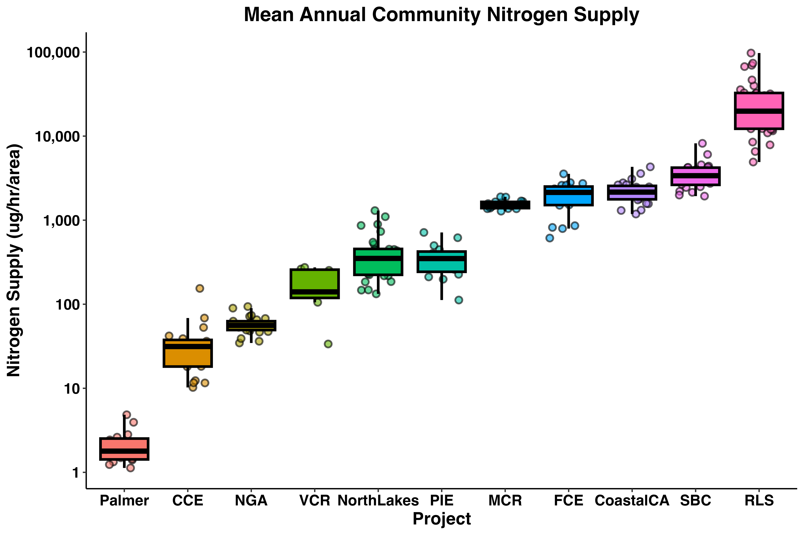
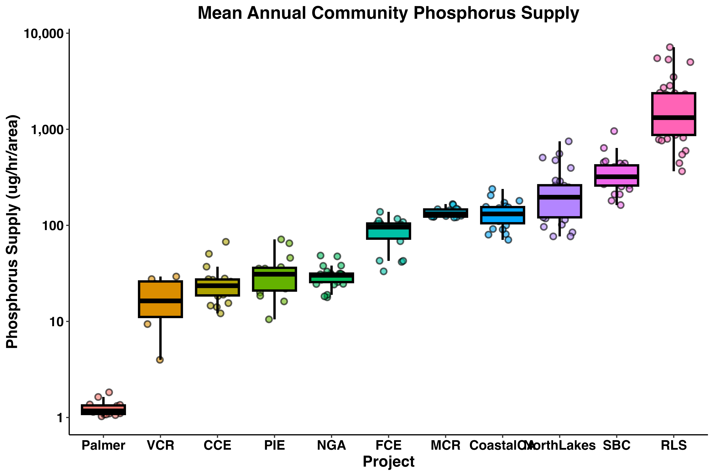
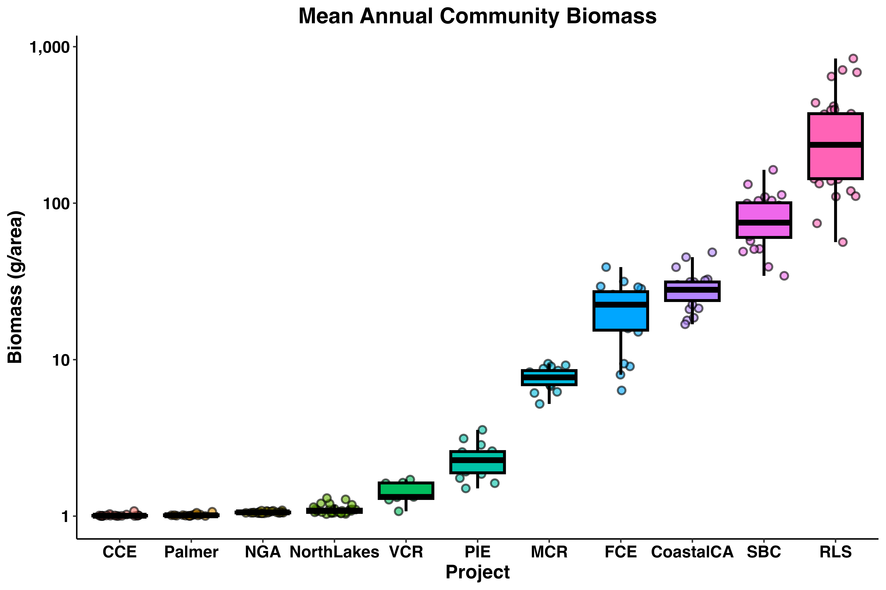

#install.packages('librarian')
librarian::shelf(tidyverse, googledrive)Code
This page houses a curated set of code designed to support the working group as we explore available data and develop analytical frameworks to meet team objectives.
Working group members are encouraged to explore the code, modify it for their own purposes/exploration, and combine ideas across examples for their analyses and curiousities. Code examples are grouped by theme (e.g., data retrieval, modeling, visualization).
Data Retrieval - Group Member Shortcuts
Below we showcase code that can be used to gather data from google drive using the the googledrive package. To run the code, you will need to tell the googledrive package who you are… please work through the tutorial before trying to run the script below :)
Housekeeping
Load necessary packages
if you do not have librarian installed, you will need to install it first
librarian() is nice because it automatically installs, updates, and attaches packages
Clear environment and collect garbage
rm(list = ls()); gc()gc() is nice because it reclaims unused R memory, useful when working with large datasets :)
Load custom functions
purrr::walk(.x = dir(path = file.path("tools"), pattern = "fxn_"),
.f = ~ source(file = file.path("tools", .x)))Download keys
download_drive_folder(
folder_url = "https://drive.google.com/drive/folders/1of2tKXcU_KnNDZrYLt3b3smObNrG_aXD",
local_subfolder = file.path("Data", "-keys"))Download raw community data
download_drive_folder(
folder_url = "https://drive.google.com/drive/folders/1n6iqs3aK2xWkROI8nPSVfk6ZkYPNpF7F",
local_subfolder = file.path("Data", "community_raw-data"))Download raw terrestrial species data
download_drive_folder(
folder_url = "https://drive.google.com/drive/folders/14H0hFBHxiqfubRBZ7DUUOSxMh5NOeiJN",
local_subfolder = file.path("Data", "species_raw-data"))Download raw trait data
download_drive_folder(
folder_url = "https://drive.google.com/drive/folders/1UAq72kFD8Hh9uV1_He1ijJQ1m4lVg7eK",
local_subfolder = file.path("Data", "traits_raw-data"),
pattern_in = ".csv")Download raw environmental data
download_drive_folder(
folder_url = "https://drive.google.com/drive/folders/1yUg4tYF7F-fuamODUOy55JUg8tmaUyYD",
local_subfolder = file.path("Data", "environmental_raw-data"))Download community_tidy data
download_drive_folder(
folder_url = "https://drive.google.com/drive/folders/1LE1Rr1Hfa1uZPvZoUIr1t18khnsnbeFV",
local_subfolder = file.path("Data", "community_tidy-data"))Download traits_tidy data
download_drive_folder(
folder_url = "https://drive.google.com/drive/folders/1KPv27jTBIwGwuHNU3-EyWlubN9xXjIDt",
local_subfolder = file.path("Data", "traits_tidy-data"))Download species_tidy data
download_drive_folder(
folder_url = "https://drive.google.com/drive/folders/1VOJpEarHAs1csIzAT7pobWXWXjLt6TdN",
local_subfolder = file.path("Data", "species_tidy-data"))Data Retrieval - Group Member Steup
Below we showcase code that can be used to create necessary local folder(s) for following scripts
Housekeeping
Load necessary packages
if you do not have librarian installed, you will need to install it first
#install.packages('librarian')
librarian::shelf(tidyverse, googledrive)Clear environment and collect garbage
rm(list = ls()); gc()Make folders
create top-level folders
dir.create(path = file.path("Data"), showWarnings = F)create some useful, one-off ’Data/” subfolders
dir.create(path = file.path("Data", "-keys"), showWarnings = F)
dir.create(path = file.path("Data", "checks"), showWarnings = F)
dir.create(path = file.path("Data", "mixed_tidy-data"), showWarnings = F)create ‘raw’ and ‘tidy’ subfolders of “Data/” for each data type
## Identify all data types
data_types <- c("community", "traits", "environmental", "species")
## Actually make folders
purrr::walk(.x = paste0(data_types, sort(rep(c("_raw-data", "_tidy-data"),
times = length(data_types)))),
.f = ~ dir.create(path = file.path("Data", .x),
showWarnings = F, recursive = T))Clear environment and collect garbage
rm(list = ls()); gc()Data Exploration - Mack Consumer Figures
librarian::shelf(tidyverse, readxl, scales, broom, purrr, dataRetrieval,
splitstackshape, forcats)nacheck <- function(df) {
na_count_per_column <- sapply(df, function(x) sum(is.na(x)))
print(na_count_per_column)
}dat <- read_csv('../lter-sparc-consumer-fxn-diversity/04_harmonized_consumer_excretion_sparc_cnd_site.csv')
glimpse(dat)
nacheck(dat)
dat1 <- dat |>
mutate(subsite_level1 = replace_na(subsite_level1, "Not Available"),
subsite_level2 = replace_na(subsite_level2, "Not Available"),
subsite_level3 = replace_na(subsite_level3, "Not Available")) |>
select(project, year, month, habitat, temp_c, site, subsite_level1, subsite_level2, subsite_level3,
scientific_name, diet_cat, nind_ug.hr, pind_ug.hr, count_num, density_num.m, density_num.m2,
density_num.m3,biomass_g, dmperind_g.ind, kingdom, phylum, class, order, family, genus)
glimpse(dat1)
nacheck(dat1)dt_total <- dat1 |>
group_by(project, habitat, year, month,
site, subsite_level1, subsite_level2, subsite_level3) |>
summarize(
### calculate total nitrogen supply at each sampling unit and then sum to get column with all totals
total_nitrogen.m = sum(nind_ug.hr * density_num.m, na.rm = TRUE),
total_nitrogen.m2 = sum(nind_ug.hr * density_num.m2, na.rm = TRUE),
total_nitrogen.m3 = sum(nind_ug.hr * density_num.m3, na.rm = TRUE),
### create column with total_nitrogen contribution for each program, regardless of units
total_nitrogen = sum(total_nitrogen.m + total_nitrogen.m2 + total_nitrogen.m3, na.rm = TRUE),
### calculate total phosphorus supply at each sampling unit and then sum to get column with all totals
total_phosphorus.m = sum(pind_ug.hr * density_num.m, na.rm = TRUE),
total_phosphorus.m2 = sum(pind_ug.hr * density_num.m2, na.rm = TRUE),
total_phosphorus.m3 = sum(pind_ug.hr * density_num.m3, na.rm = TRUE),
### create column with total_phosphorus contribution for each program, regardless of units
total_phosphorus = sum(total_phosphorus.m + total_phosphorus.m2 + total_phosphorus.m3, na.rm = TRUE),
### calculate total biomass at each sampling unit and then sum to get column with all totals
total_bm.m = sum(dmperind_g.ind*density_num.m, na.rm = TRUE),
total_bm.m2 = sum(dmperind_g.ind*density_num.m2, na.rm = TRUE),
total_bm.m3 = sum(dmperind_g.ind*density_num.m3, na.rm = TRUE),
### create column with total_biomass for each program, regardless of units
total_biomass = sum(total_bm.m + total_bm.m2 + total_bm.m3, na.rm = TRUE)) |>
ungroup() |>
arrange(project, habitat, year, month, site, subsite_level1, subsite_level2, subsite_level3) |>
filter(habitat!= 'beach')
nacheck(dt_total)dt_total |>
mutate(project = as.factor(project)) |>
filter(!project %in% c('Arctic')) |>
group_by(project, year) |>
summarize(
mean = mean(total_nitrogen + 1, na.rm = TRUE),
median = median(total_nitrogen + 1, na.rm = TRUE),
.groups = 'drop'
) |>
mutate(
project = fct_reorder(project, median)
) |>
# filter(mean < 25000) |>
ggplot(aes(x = project, y = mean)) +
geom_jitter(aes(fill = project), shape = 21, width = 0.3,
color ='black', size = 2, stroke = 1, alpha = 0.6) +
geom_boxplot(aes(fill = project), position = position_dodge(0.8),
outlier.shape = NA, alpha = 1, size = 1, color = 'black') +
scale_y_log10(
breaks = 10^(-2:6),
labels = label_number(big.mark = ",")
) +
labs(x = 'Project', y = 'Nitrogen Supply (ug/hr/area)',
title = 'Mean Annual Community Nitrogen Supply') +
theme(
strip.text = element_text(size = 16, face = "bold", colour = "black"),
strip.background = element_blank(),
axis.text = element_text(size = 12, face = "bold", colour = "black"),
axis.title = element_text(size = 14, face = "bold", colour = "black"),
panel.grid.major = element_blank(),
panel.grid.minor = element_blank(),
panel.border = element_blank(),
panel.background = element_blank(),
axis.line = element_line(colour = "black"),
legend.position = "none",
plot.title = element_text(size = 16, face = "bold", colour = "black",
hjust = 0.5)
)
ggsave('output/n_boxplot-all.png', dpi = 600,
units= 'in', height = 6, width = 9)
dt_total |>
mutate(project = as.factor(project)) |>
filter(!project %in% c('Arctic')) |>
group_by(project, year) |>
summarize(
mean = mean(total_phosphorus + 1, na.rm = TRUE),
median = median(total_phosphorus + 1, na.rm = TRUE),
.groups = 'drop'
) |>
mutate(
project = fct_reorder(project, median)
) |>
# filter(mean < 25000) |>
ggplot(aes(x = project, y = mean)) +
geom_jitter(aes(fill = project), shape = 21, width = 0.3,
color ='black', size = 2, stroke = 1, alpha = 0.6) +
geom_boxplot(aes(fill = project), position = position_dodge(0.8),
outlier.shape = NA, alpha = 1, size = 1, color = 'black') +
scale_y_log10(
breaks = 10^(-2:6),
labels = label_number(big.mark = ",")
) +
labs(x = 'Project', y = 'Phosphorus Supply (ug/hr/area)',
title = 'Mean Annual Community Phosphorus Supply') +
theme(
strip.text = element_text(size = 16, face = "bold", colour = "black"),
strip.background = element_blank(),
axis.text = element_text(size = 12, face = "bold", colour = "black"),
axis.title = element_text(size = 14, face = "bold", colour = "black"),
panel.grid.major = element_blank(),
panel.grid.minor = element_blank(),
panel.border = element_blank(),
panel.background = element_blank(),
axis.line = element_line(colour = "black"),
legend.position = "none",
plot.title = element_text(size = 16, face = "bold", colour = "black",
hjust = 0.5)
)
ggsave('output/p_boxplot-all.png', dpi = 600,
units= 'in', height = 6, width = 9)
dt_total |>
mutate(project = as.factor(project)) |>
filter(!project %in% c('Arctic')) |>
group_by(project, year) |>
summarize(
mean = mean(total_biomass + 1, na.rm = TRUE),
median = median(total_biomass + 1, na.rm = TRUE),
.groups = 'drop'
) |>
mutate(
project = fct_reorder(project, median)
) |>
# filter(mean < 25000) |>
ggplot(aes(x = project, y = mean)) +
geom_jitter(aes(fill = project), shape = 21, width = 0.3,
color ='black', size = 2, stroke = 1, alpha = 0.6) +
geom_boxplot(aes(fill = project), position = position_dodge(0.8),
outlier.shape = NA, alpha = 1, size = 1, color = 'black') +
scale_y_log10(
breaks = 10^(-2:6),
labels = label_number(big.mark = ",")
) +
labs(x = 'Project', y = 'Biomass (g/area)',
title = 'Mean Annual Community Biomass') +
theme(
strip.text = element_text(size = 16, face = "bold", colour = "black"),
strip.background = element_blank(),
axis.text = element_text(size = 12, face = "bold", colour = "black"),
axis.title = element_text(size = 14, face = "bold", colour = "black"),
panel.grid.major = element_blank(),
panel.grid.minor = element_blank(),
panel.border = element_blank(),
panel.background = element_blank(),
axis.line = element_line(colour = "black"),
legend.position = "none",
plot.title = element_text(size = 16, face = "bold", colour = "black",
hjust = 0.5)
)
ggsave('output/bm_boxplot-all.png', dpi = 600,
units= 'in', height = 6, width = 9)
systems <- dat |>
select(project, habitat, site, subsite_level1, subsite_level2, subsite_level3) |>
distinct()dt_total |>
mutate(project = as.factor(project)) |>
filter(!project %in% c('Arctic')) |>
mutate(project = case_when(
project == 'CoastalCA' & site == 'CENTRAL' ~ 'PISCO_C',
project == 'CoastalCA' & site == 'SOUTH' ~ 'PISCO_S',
TRUE ~ project
)) |>
mutate(
system = case_when(
project == 'SBC' & habitat == 'beach' ~ site,
project == 'SBC' & habitat == 'ocean' ~ site,
project == 'Palmer' ~ site,
project == 'CCE' ~ paste(site, subsite_level1, sep = ''),
project == 'FCE' ~ paste(site, subsite_level1, sep = ''),
project == 'NGA' ~ subsite_level1,
project == 'NorthLakes' ~ site,
project == 'VCR' ~ paste(subsite_level1, subsite_level2, sep = ''),
project == 'PIE' ~ site,
project == 'MCR' ~ paste(subsite_level1, subsite_level2, sep = ''),
project == 'PISCO_C' ~ subsite_level2,
project == 'PISCO_S' ~ subsite_level2,
project == 'FISHGLOB' ~ site,
project == 'RLS' ~ site)
) |>
group_by(project, system, year) |>
summarize(
mean = mean(total_nitrogen + 1, na.rm = TRUE),
median = median(total_nitrogen + 1, na.rm = TRUE),
.groups = 'drop'
) |>
filter(mean < 25000) |>
filter(!project == 'CCE' | mean <= 1000) |>
filter(!project == 'NorthLakes' | mean <= 2000) |>
filter(!project == 'PISCO_S' | mean <= 15000) |>
filter(!project == 'SBC' | mean <= 20000) |>
filter(!project == 'VCR' | mean <= 1000) |>
filter(!project == 'FCE' | mean <= 10000) |>
ggplot(aes(x = year, y = mean, fill = system, color = system, group = system)) +
geom_jitter(aes(fill = system), shape = 21, width = 0.3,
color ='black', size = 2, stroke = 1, alpha = 0.6) +
geom_smooth(method = 'loess', se = FALSE) +
facet_wrap(~project, scale = 'free') +
labs(x = 'Project', y = 'Nitrogen Supply (ug/hr/area)',
title = 'Mean Annual Community Nitrogen Supply by Site') +
theme(
strip.text = element_text(size = 16, face = "bold", colour = "black"),
strip.background = element_blank(),
axis.text = element_text(size = 12, face = "bold", colour = "black"),
axis.title = element_text(size = 14, face = "bold", colour = "black"),
panel.grid.major = element_blank(),
panel.grid.minor = element_blank(),
panel.border = element_blank(),
panel.background = element_blank(),
axis.line = element_line(colour = "black"),
legend.position = "none",
plot.title = element_text(size = 16, face = "bold", colour = "black",
hjust = 0.5)
)
ggsave('output/nsupply-ts-all.png', dpi = 600,
units= 'in', height = 10, width = 14)system_m <- dt_total |>
mutate(project = as.factor(project)) |>
filter(!project %in% c('Arctic')) |>
mutate(project = case_when(
project == 'CoastalCA' & site == 'CENTRAL' ~ 'PISCO_C',
project == 'CoastalCA' & site == 'SOUTH' ~ 'PISCO_S',
TRUE ~ project
)) |>
mutate(
system = case_when(
project == 'SBC' & habitat == 'beach' ~ site,
project == 'SBC' & habitat == 'ocean' ~ site,
project == 'Palmer' ~ site,
project == 'CCE' ~ paste(site, subsite_level1, sep = ''),
project == 'FCE' ~ paste(site, subsite_level1, sep = ''),
project == 'NGA' ~ subsite_level1,
project == 'NorthLakes' ~ site,
project == 'VCR' ~ paste(subsite_level1, subsite_level2, sep = ''),
project == 'PIE' ~ site,
project == 'MCR' ~ paste(subsite_level1, subsite_level2, sep = ''),
project == 'PISCO_C' ~ subsite_level2,
project == 'PISCO_S' ~ subsite_level2,
project == 'FISHGLOB' ~ site,
project == 'RLS' ~ paste(site, subsite_level1, sep = ''),
)
) |>
group_by(project, system, year) |>
summarize(
mean = mean(total_nitrogen + 1, na.rm = TRUE),
median = median(total_nitrogen + 1, na.rm = TRUE),
.groups = 'drop'
)